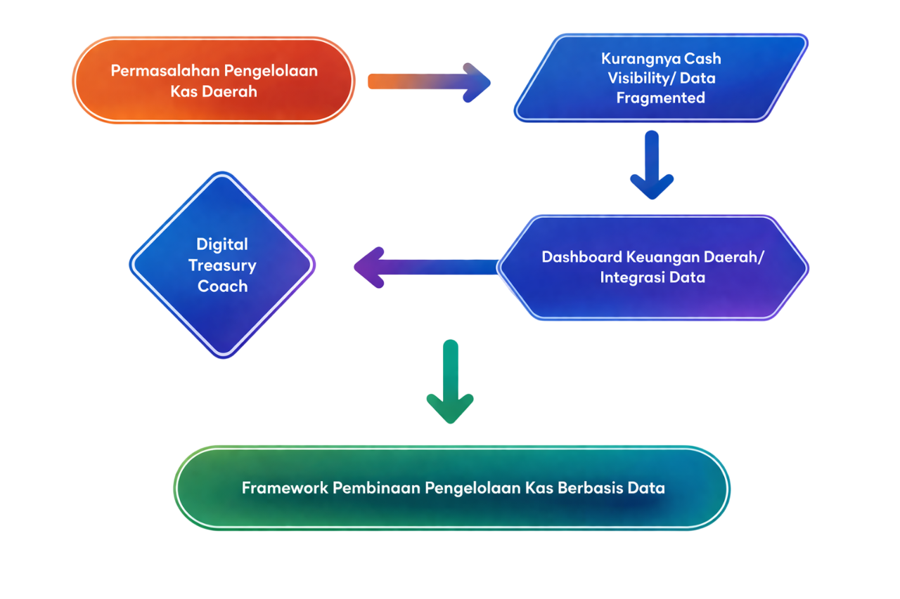

Digital Treasury Coach
Peningkatan Peran Kanwil DJPb dalam Pembinaan Pengelolaan Kas Daerah
Peningkatan Peran Kanwil DJPb dalam Pembinaan Pengelolaan Kas Daerah
Pengelolaan kas daerah berpengaruh langsung terhadap efektivitas layanan publik, stabilitas fiskal, dan pelaksanaan APBD. Namun, Masih terdapat kendala:
DJPb hadir sebagai Regional Chief Economist untuk mendorong tata kelola kas yang modern dan akuntabel.
Meninjau sejauh mana peran Kanwil DJPb dalam memberikan solusi konkret dan pembinaan adaptif bagi Pemda terhadap tantangan pengelolaan kas di masa depan.
Standardisasi fungsi Kanwil DJPb di seluruh Indonesia sebagai center of excellence dan mitra konsultasi proaktif dalam menjaga kesehatan fiskal regional.
Hubungan Keuangan Pusat dan Daerah
Organisasi & Tata Kerja Instansi Vertikal DJPb
Pengelolaan Keuangan Daerah
Pedoman Teknis Pengelolaan Keuangan Daerah
Pedoman Mekanisme Kerja di Lingkungan Ditjen Perbendaharaan
Program Penguatan Peran KPPN Selaku Financial Advisor
Perbandingan realisasi menunjukkan pengelolaan kas daerah belum optimal, ditandai dengan perencanaan tidak periodik dan belum didukung regulasi teknis.

Deviasi antara rencana dan realisasi kas masih tinggi, menunjukkan perlunya pembinaan berbasis data oleh Kanwil DJPb.

| Metrik | Pemda | Pusat | Catatan & Analisis Strategis |
|---|---|---|---|
| wMAPE | 47,32% | 8,79% | Deviasi pada pengelolaan kas Pemda tahun 2025 5,4× lebih tinggi dari pusat. Akurasi RPD bulanan Pemda perlu perbaikan besar dan merupakan potensi fokus pembinaan pengelolaan keuangan negara oleh DJPb. |
| MPE (bias) | -34,77% | -7,88% | Pemda mengalami under-realization jauh lebih tinggi dari pemerintah pusat. Hal ini memaksa pemda untuk menekan belanja dan menerapkan kebijakan surplus arus kas dengan menggeser pembayaran belanja ke bulan berikutnya. |
| CV (Koefisien variasi) | 0,587 | 0,254 | Volatilitas Pemda 2,3× lebih tinggi yang disebabkan perencanaan kas yang tidak baik. Hal ini menyebabkan buffer kas harus lebih besar dan risiko cash rationing lebih tinggi. Cash Rationing adalah kebijakan pembatasan pengeluaran kas secara ketat karena jumlah uang yang tersedia tidak cukup untuk membiayai semua rencana belanja yang ada terutama ketika target PAD belum tercapai. |
| Tools | Belum Ada | Tersedia | Pemerintah pusat telah memiliki peraturan lengkap untuk pengelolaan kas baik dari sisi perencanaan, standar deviasi dan alat untuk monitoring berupa dashboard pada OMSPAN dan MyIntress. Kondisi ini dapat diterapkan pada pemerintah daerah dengan strategi pembinaan Digital Treasury Coach. |
Peran Kanwil DJPb yang lebih strategis, proaktif, dan berbasis data
Usulan penerbitan payung hukum PP sebagai tindak lanjut Pasal 151 UU No. 1/2022 (HKPD)
Perubahan PMK-262/2016 untuk penegasan peran Vertikal terkait fungsi RCE dan FA
Usulan Keputusan Dirjen terkait penguatan peran Kanwil dalam Financial Advisor

Perbandingan pendekatan lama dengan model pembinaan berbasis data dan dashboard